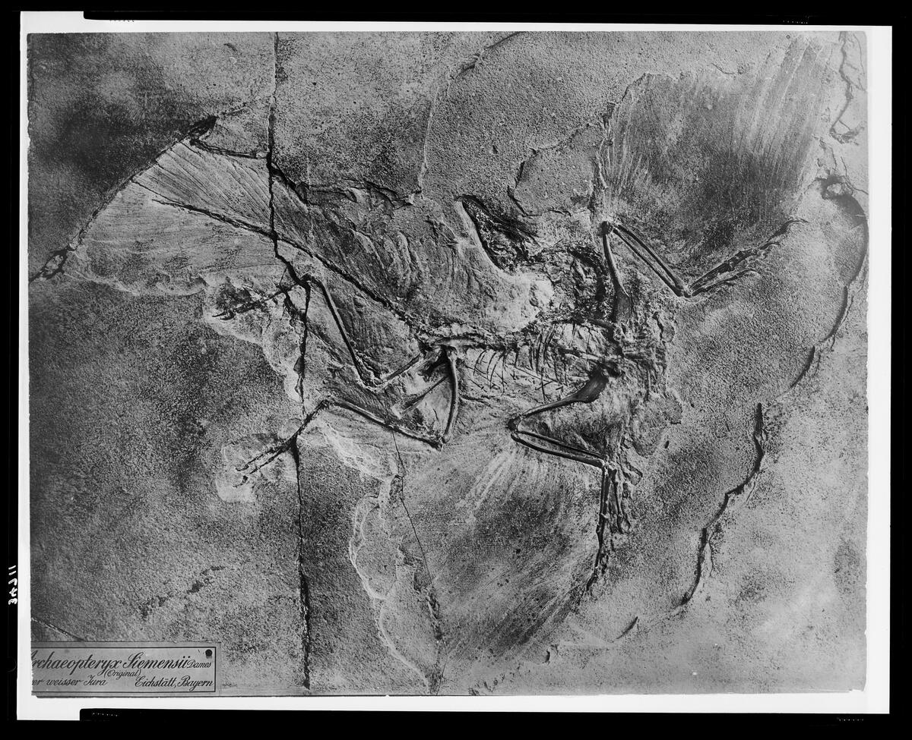

|  |
James H. Miller jhm5 -at- princeton.edu |
I'm James lol
Selected Papers
An experimental design framework for label-efficient supervised finetuning of large language models
Gantavya Bhatt, Yifang Chen, Arnav M. Das, Jifan Zhang, Sang T. Truong, Stephen Mussmann, Yinglun Zhu, Jeffrey Bilmes, Simon S. Du, Kevin Jamieson, Jordan T. Ash and Robert D. Nowak. 2024.
paper